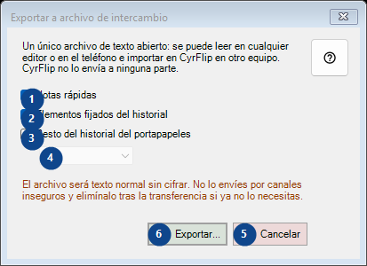
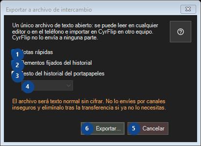

Exportar a archivo de intercambio
Para qué sirve
Lee las explicaciones numeradas, elige los valores necesarios y continúa con el comando de la ventana.


Orden de uso
Lee las explicaciones numeradas, elige los valores necesarios y continúa con el comando de la ventana.
Elementos
1. Notas rápidas
Usa este comando para la acción indicada. Lee cualquier confirmación antes de aceptarla.
Tus atajos2. Elementos fijados del historial
Usa este comando para la acción indicada. Lee cualquier confirmación antes de aceptarla.
Tus atajos3. Resto del historial del portapapeles
Usa este comando para la acción indicada. Lee cualquier confirmación antes de aceptarla.
Tus atajos4. Un único archivo de texto abierto: se puede leer en cualquier editor o en el teléfono e importar en CyrFlip en otro equipo. CyrFlip no lo envía a ninguna parte.
Elige o introduce el valor de la etiqueta contigua. Revísalo antes de continuar. Este elemento no está disponible. Activa primero la función o selecciona una entrada.
Tus atajos5. Cancelar
Usa este comando para la acción indicada. Lee cualquier confirmación antes de aceptarla.
Tus atajos6. Exportar...
Usa este comando para la acción indicada. Lee cualquier confirmación antes de aceptarla.
Tus atajos